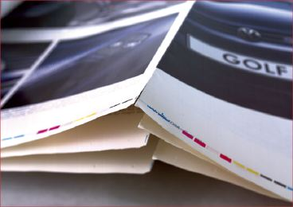
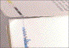
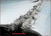
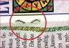

FALZBRECHEN IM HEATSET-ROLLENOFFSET
|
Beim Heatset-Rollenoffset wird die Druckfarbe
mit Heißluft bei Lufttemperaturen bis zu
300 °C im Zeitraum von 1 bis 2 Sekunden
getrocknet. Das Druckpapier wird bei diesem
Trocknungsprozess extrem stark thermisch belastet;
die Papierfaser verliert an Geschmeidigkeit und
Festigkeit. Weiterhin wird die getrocknete
Papierbahn im Falzapparat der Rollenoffsetmaschine
zu Falzbogen gefalzt. Dabei kann es vorkommen, dass
das Papier aufgrund des starken
Festigkeitsverlustes im Falz partiell oder auch
großflächig aufbricht. Die Falzbogen
können aufgrund der Beschädigung im Falz
nicht mehr weiterverarbeitet werden. Meist aber ist
die Beschädigung im Falz nach dem Druck noch
nicht sichtbar; die Festigkeit im Falz aber dennoch
drastisch herabgesetzt. In diesem Fall tritt das
Falzbrechen erst während des
Verarbeitungsprozesses (Klammerheftung) oder beim
Gebrauch der Produkte auf. Reklamationen wegen
Falzbrechen sind meist äußerst
kostenträchtig
(Abb. 1).
|

|
Abb. 1: Aufbrechen des Falzes einer
Rollenoffset-Produktion.
|
|
|
|
Mögliche Ursachen:
|
|

|
|
Abb. 2: Vergrößerte Darstellung des
Falzbrechens.
|
|
|
|

|
|
Abb. 3: Vergrößerte Darstellung des
Falzbrechens (REM-Aufnahme).
|
|
|
|
|
|
Abb. 4: Ausbrechen der innersten Lage.
|
|
|
|
|
|
Abb. 5: Ausbrechen der innersten Lage
(Detailaufnahme).
|
|
|
|

|
|
Abb. 6: Zu stark gebogene Klammerschenkel.
|
|
|
|

|
|
|
|
|
|

|
|
|
|
|
|

|
|
|
|
|
|
|
1. Druckpapier:
Ein entscheidendes Kriterium für ein Rollenoffsetpapier
ist die sog. Restfestigkeit. Unter Restfestigkeit versteht
man die Festigkeit eines Papiers nach definierter
Heißluft- und Falzbeanspruchung. Rollenoffsetpapiere
haben je nach ihrer Beschaffenheit (Stoffzusammensetzung,
Strichmenge, -rezeptur) ein sehr unterschiedliches Verhalten
hinsichtlich der Restfestigkeit. Für die Restfestigkeit
gelten empfohlene Grenzwerte, die vom Papierhersteller
eingehalten werden sollten. Die Prüfung der
Restfestigkeit wird mit einer standardisierten Testmethode
(FOGRA-Methode) vorgenommen. Es gelten dabei folgende
Grenzwerte:
A. Restfestigkeitsbereiche für Papiersorten mit
einer flächenbezogenen Masse größer als
72 g/m2
Restfestigkeitswert:
kritischer Bereich: <10 N/15 mm
mittlerer Bereich: 10 N/15 mm - 15 N/15 mm
unkritischer Bereich: >15 N/15 mm
B. Restfestigkeitsbereiche für Papiersorten mit
einer flächenbezogenen Masse kleiner
als 72 g/m2
Restfestigkeitswert:
kritischer Bereich: <10 N/15 mm
mittlerer Bereich: 10 N/15 mm - 12,5 N/15 mm
unkritischer Bereich: >12,5 N/15 mm
Kritischer Bereich: Das Falzbrechen hat papierbedingte
Ursachen.
Mittlerer Bereich: Bei Papieren im mittleren Bereich
können bei ungünstigen Bedingungen bezüglich
Trockner- und Falzeinstellungen Probleme durch Brechen im
Falz auftreten.
Unkritischer Bereich: Papierbedingtes Falzbrechen ist nicht
zu erwarten.
Als papierbedingte Ursache für das Falzbrechen sind
also Papiere zu nennen, deren Restfestigkeit im kritischen
Bereich liegt.
2. Trockner- und Falzeinstellung:
Eine überhöhte Trocknereinstellung hat eine
übermäßig starke Austrocknung des Papiers
zur Folge und stellt einen entscheidenden negativen Einfluss
für das Falzbrechen dar (Abb. 2 und Abb. 3).
Die Einstellung des Falzapparates in der
Rollenoffsetmaschine bzw. - bei Planoauslage - die
Einstellung der Falzmaschine in der Druckweiterverarbeitung
haben ebenfalls einen entscheidenden Einfluss auf das
Falzbrechen.
Überhöhter Falzdruck oder auch
Lufteinschlüsse beim Falzvorgang können zum
Aufbrechen des Falzes führen.
3. Klammerheftung:
Ungünstige Einstellungen beim Klammerheften können
zu einer übermäßigen mechanischen Belastung
des Falzbereiches und somit ebenfalls zum Falzbrechen
führen. Folgende Ursachen können beim
Klammerheften genannt werden:
- zu stark gebogene Klammer
- nicht ausreichend gebogene Klammer
- stumpf abgeschnittener Heftdraht (Gratbildung)
- zu lange abgeschnittener Heftdraht (beim
Schließvorgang berühren sich die Klammerenden, es
entsteht eine Stauchwirkung in den Biegezonen)
- entsprechend der Produktdicke zu starker oder zu
dünner Heftdraht
|
Mögliche Abhilfen:
|
|
1. Druckpapier:
Für eine Rollenoffsetproduktion sollten möglichst
Papiere mit hoher Restfestigkeit eingesetzt werden. Bei
größeren Auflagen ist es empfehlenswert, im
Vorfeld entsprechende Vergleichsversuche mit mehreren
Papiersorten vorzunehmen. Dies trifft insbesondere für
LWC-Papiere zu.
2. Trockner- und Falzeinstellung:
Der Einstellung des Heißlufttrockners und vor allem
der ständigen Überwachung der Temperatur über
einen längeren Produktionszeitraum hinweg ist besondere
Achtung zu schenken. Eine thermische Überbelastung des
Papiers sollte unter allen Umständen vermieden werden.
Eine turnusgemäße Reinigung der Messoptiken zur
Regelung der Trocknertemperatur ist dringend einzuhalten.
Die Messoptiken verschmutzen durch Papierstaub und
Mineralöldämpfe und führen zu Fehlsteuerungen
der Heißlufttrockner, wodurch die Papierbahn
stärker als normal thermisch belastet wird.
Die Einstellung des Falzapparates ist ebenfalls von
entscheidender Bedeutung und sollte sehr sorgfältig
vorgenommen werden. In diesem Zusammenhang ist es
empfehlenswert, die Falzfestigkeit über die Auflage
hinweg ständig zu kontrollieren.
Generell ist eine Rückbefeuchtung im Rollenoffset oder
zumindest eine Befeuchtung im Falzbereich (fold softening)
vor dem Falzvorgang dringend zu empfehlen, um dem Papier die
entzogene Feuchtigkeit zurückzugeben und um somit die
Festigkeit zu steigern.
3. Klammerheftung:
Bei der Weiterverarbeitung - insbesondere beim Klammerheften
- von Rollenoffset-Produkten sollte generell mit
erhöhter Vorsicht gearbeitet werden. Sorgfältige
Maschineneinstellung ist bei der Verarbeitung von den
ohnehin im Falz stark geschwächten Falzbogen
unerlässlich. Generell ist eine Eingangsprüfung
der Falzfestigkeit vor der Verarbeitung zu empfehlen, um
bereits im Vorfeld bei eventuell auftretenden Problemen
gegensteuern bzw. den Kunden über die vorliegende
Problematik informieren zu können.
|
Beispiel(e):
|
|
Papierbedingtes Falzbrechen bei einem vierfarbigen
Katalog:
Ein vierfarbiger Möbelprospekt wurde reklamiert, weil
sich die innersten Seiten bereits beim Umblättern aus
der Klammerheftung lösten (Abb. 4 und Abb. 5). Bei der
visuellen Begutachtung der Klammerheftung konnten keine
Hinweise auf Fehleinstellungen in der Heftstation erkannt
werden.
Manuelle Zugversuche im Falzbereich der innersten Lagen
ergaben eine extrem niedrige Festigkeit im Falz.
Anhand der übersandten unbedruckten Papiermuster des
Auflagenpapiers wurde weiterhin die
Restfestigkeitsuntersuchung vorgenommen. Diese ergab
für das eingesetzte LWC-Papier eine Restfestigkeit
längs von 14,8 N/15 mm und für die Restfestigkeit
quer einen Wert von nur 7,4 N/15 mm. Da der Prospekt in
„stehender Produktion“ (Falz parallel zur
Papierfaserlaufrichtung) gedruckt wurde, ist der
Restfestigkeitswert quer relevant. Dieser Wert lag im
kritischen Bereich und die Reklamation konnte somit auf eine
papierbedingte Ursache zurückgeführt werden.
Ursachen, die auf Produktionsschwankungen in der Druckerei
zurückzuführen sind, konnten dadurch
ausgeschlossen werden.
Falzbrechen aufgrund schlecht ausgeführter
Klammerheftung:
Ein Modeprospekt wurde wegen des Herauslösens der
innersten Lagen aus der Klammerheftung reklamiert. Zur
Untersuchung standen unbedrucktes Auflagenpapier, nicht
geheftete Falzbogen und fertig geheftete Exemplare zur
Verfügung.
Die Restfestigkeitsuntersuchung ergab für das
Auflagenpapier Werte im unkritischen Bereich.
Zugfestigkeitsuntersuchungen im Falz der ungehefteten
Falzbogen belegten, dass die Falzfestigkeit der gefalzten
Bogen vor der Klammerheftung ausreichend hoch war. Dadurch
schieden papierbedingte und prozessbedingte Ursachen des
Heatset-Rollenoffset aus.
Eine genauere Begutachtung der Klammerheftung ergab, dass
die Klammerschenkel zu stark gebogen wurden und somit den
Falz übermäßig stark beanspruchten (Abb.
6).
|
Allgemeine Hinweise:
|
|
Für den Reklamationsfall:
20 Blatt des unbedruckten Auflagenpapiers (DIN A 4) sollte
von jeder Rolle zurückgelegt werden. Mit Hilfe des
unbedruckten Auflagenpapiers kann im Reklamationsfall mit
der Restfestigkeitsuntersuchung nachvollzogen werden, ob dem
Falzbrechen papierbedingte oder prozessbedingte Ursachen
(Heißlufttrocknung, Falzeinstellung) zugrunde
liegen.
Falls vorhanden, Vergleichspapier sicherstellen.
Einstellungen des Heißlufttrockners ermitteln.
Reklamierte Muster sicherstellen.
Ergänzende Literatur:
FALTER, K.-A.; SCHMITT, U.:
Einfluss der Hitzeeinwirkung auf die
Festigkeitseigenschaften und die Dimensionsveränderung
des Druckpapiers.
München: FOGRA, 1989 (4.035). - Forschungsbericht
FALTER, K.-A.; SCHMITT, U.:
Entwicklung und Erprobung einer Prüfstrecke zur
Ermittlung der Falzfestigkeit von Rollenoffsetpapieren.
Wiesbaden/München: Bundesverband Druck E. V./FOGRA,
1990 (4.048). - Forschungsbericht
KIRMEIER, M.:
Festsetzung neuer Grenzwerte für die Restfestigkeit von
leichtgewichtigen Papieren.
In: FOGRA-Aktuell (1996), Nr. 22, S. 3
FALTER, K.-A.; KIRMEIER, M.:
Erfassung der Wirkungsweise von Rückbefeuchtungsanlagen
in Rollenoffsetmaschinen.
Wiesbaden: Bundesverband Druck E. V., 1995, -
Informationen
|
|
|
|
|
|
|
Kontakt:
pantel@fogra.org
|
Fal-pan-200112
|